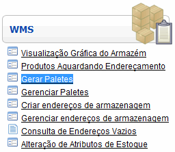
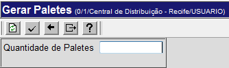
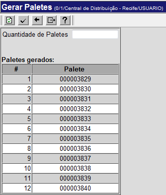

Gerar Paletes [ Voltar ]Utilize este formulário para gerar os paletes que serão utilizados no recebimento. Para acessar o formulário, vá ao menu "WMS" na página inicial e clique no formulário "Gerar Paletes".
Após clicar no formulário, o sistema abrirá a seguinte tela: 
1º Passo: informe a quantidade de paletes que deseja gerar. No campo "Quantidade de Paletes" faça uma estimativa de quanto paletes devem ser utilizados para o acondicionamento dos produtos do recebimento. 2° Passo: clique no botão  para processar a operação.
É exibida na parte inferior da tela uma listagem contendo os números
dos paletes gerados ao mesmo tempo em que são mandados para impressão
os códigos de barras do paletes em questão. para processar a operação.
É exibida na parte inferior da tela uma listagem contendo os números
dos paletes gerados ao mesmo tempo em que são mandados para impressão
os códigos de barras do paletes em questão.
|